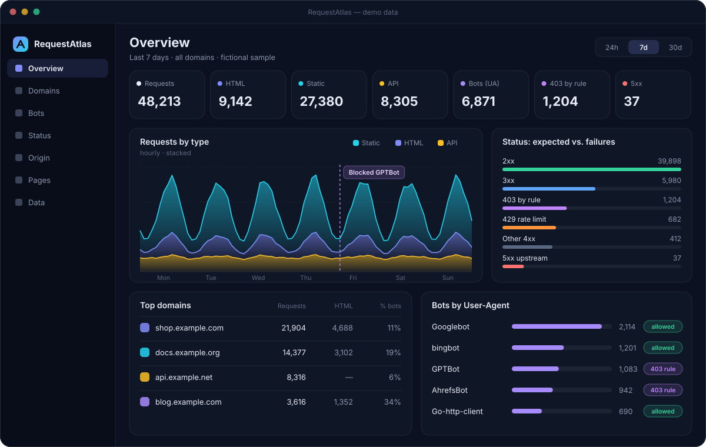

Self-hosted · open source · for Nginx Proxy Manager
See what's really hitting your reverse proxy.
RequestAtlas reads your Nginx Proxy Manager access logs and turns them into a private dashboard: pages vs. static files vs. API calls, bots identified by User-Agent, and the 403s you meant to send kept apart from real 5xx failures.
- MIT license
- Docker image for amd64 & arm64
- No changes to your proxy hosts

What it shows
Every request, sorted into something you can act on
Raw access logs already know who asked for what. RequestAtlas reads them incrementally — including rotated .gz files — and answers the questions you'd otherwise grep for.
-
Pages, assets and API — split
Each request is classified as HTML, static file or API call, so a burst of JavaScript downloads never looks like a traffic spike. Prefixes and extensions are configurable per site.
-
Bots by User-Agent
Built-in signatures for search engines, AI crawlers and SEO tools, plus your own patterns. See the top declared bots and their hourly or daily trend.
-
Expected 403 ≠ real failure
Blocks you configured in NPM — User-Agent rules or
geoIP lists — count as intentional 403s, apart from 429 rate limits and upstream 5xx errors. -
Per-domain pages
Traffic for each proxy host and its top paths, filtered by period, status, bot and request type — with CSV export.
-
Origin, with privacy
Country and ASN from your own optional GeoLite2 files. Full IPs are never displayed — only /24 or /48 networks — and distinct-IP counts are clearly labeled as estimates.
-
Events and before/after
Mark a change such as “Blocked GPTBot” and compare periods around it. An ingestion page tells you whether the numbers are current.
Quickstart
Running in three steps
You need Docker Compose v2.24+ and the host directory that Nginx Proxy Manager mounts at /data.
-
Get the files
Clone the repository and create the
.envandconfig/you'll edit.git clone https://github.com/Matheuscara/RequestAtlas.git cd RequestAtlas cp .env.example .env mkdir -p config -
Point it at NPM
In
.env, set the absolute path of NPM's data directory:REQUESTATLAS_NPM_DATA=/srv/nginx-proxy-manager/data -
Start it
docker compose up -dOpen
http://127.0.0.1:7881on the Docker host. It listens on loopback only; reach it through an SSH tunnel or publish it via NPM with HTTPS and an Access List.
No NPM handy? Try the demo
With Python 3.11+, generate fictional logs, domains and a bot-block event, then open the same address.
python3 scripts/gen_demo.py /tmp/requestatlas-demo
REQUESTATLAS_LANGUAGE=en python3 -m requestatlas serve \
--config /tmp/requestatlas-demo/requestatlas.tomlFull guide
Permissions, authentication, MySQL/MariaDB setups, native install with systemd, and reprocessing after rule changes are all in the README.
Customize
Your dashboard, your rules
- Preview in the browser. The Appearance panel tries titles and colors locally, then downloads a TOML snippet. The dashboard never writes server config.
- Configure in one TOML file. Branding, English or Portuguese UI, time zone, page order, colors, custom bots, URL classification, domains, events and privacy.
- Override from the environment. Any key works as
REQUESTATLAS__SECTION__KEY, so Compose users can stay in.env. - Logs-only mode. NPM on MySQL or MariaDB? Log analysis still works — name your domains and block rules in TOML.
[ui]
title = "My dashboard"
language = "en"
default_tz = "Europe/Berlin"
accent = ["#f97316", "#ec4899"]
pages = ["overview", "sites", "bots", "status"]
[sites.1]
name = "My shop"
api_prefixes = ["/api/"]
ua_rules = [{ pattern = "GPTBot", status = 403 }]Privacy & security
Built to stay on your server
-
Read-only access to NPM
Only logs,
database.sqliteand nginx config are mounted, read-only. NPM'skeys.json, custom certificates and access lists stay out. Aggregates live in RequestAtlas's own volume. -
Private by default
Published on
127.0.0.1only, running as a non-root user. Optional Basic Auth from a password file;/healthzis the only open endpoint. -
No raw IPs in its database
Addresses are stored as a keyed hash, with a secret generated on your server, next to the masked network. The UI shows networks, never full IPs.
Questions
Does it work with plain Nginx, Caddy or Traefik?
Not today. The parser reads Nginx Proxy Manager's proxy-host log format (proxy-host-N_access.log and its rotated .gz files).
Does it change my NPM setup?
No. It only reads logs and NPM's database. Proxy hosts, certificates and Advanced config stay untouched.
Is it a web analytics tool?
It counts requests that reached your proxy, not people. There is no tracking script and nothing to add to your sites.
Can I run it without Docker?
Yes. It needs Python 3.11+ on a host that can read the NPM logs; a systemd unit is included in deploy/.
Open source, MIT licensed
Read the code, open an issue, or adapt it to your own proxy. Contributions are welcome.